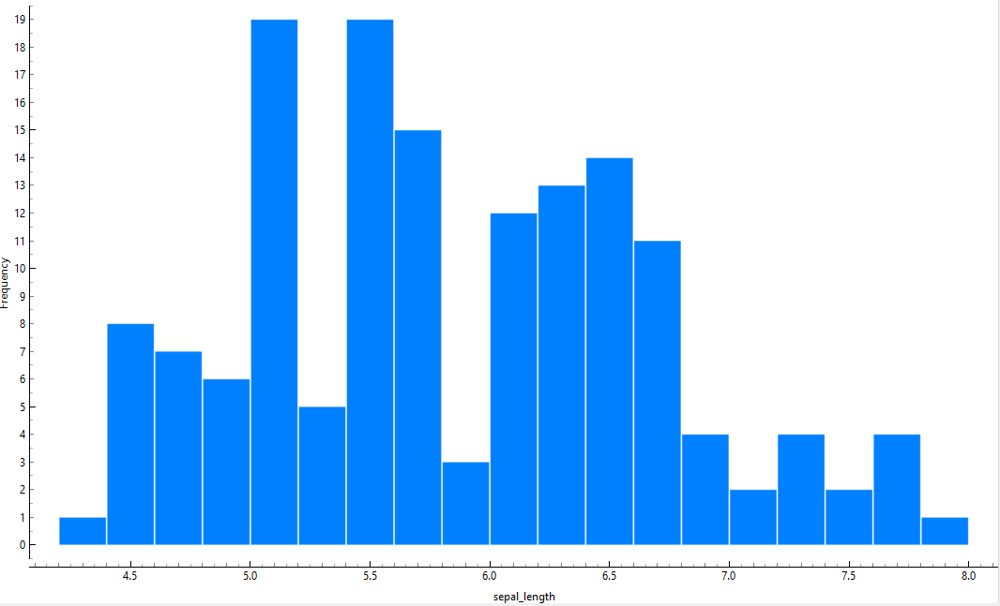
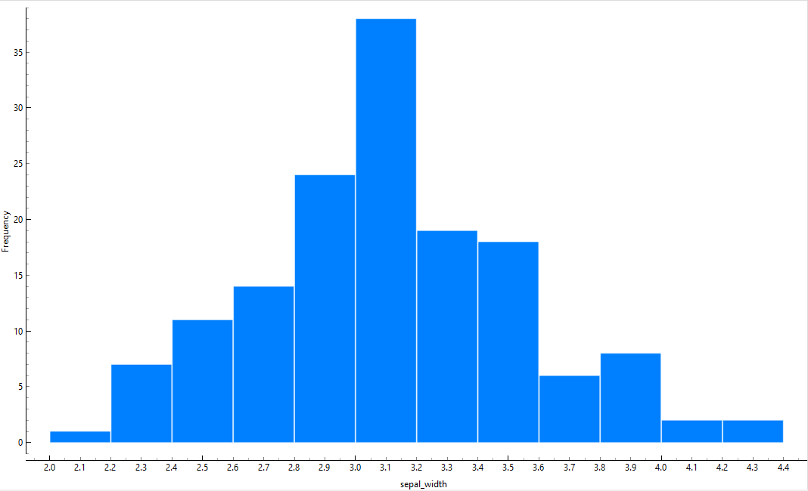
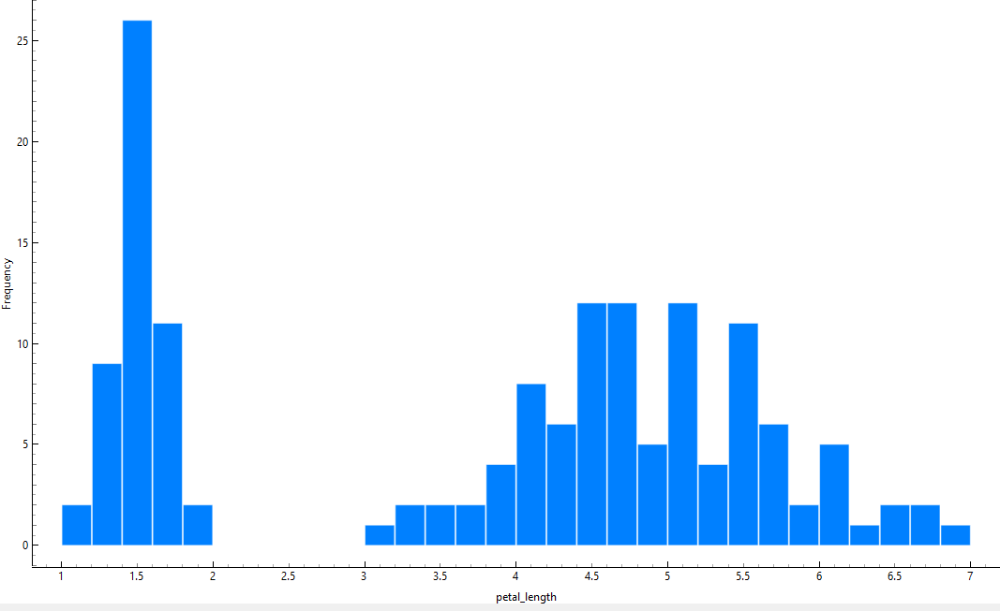
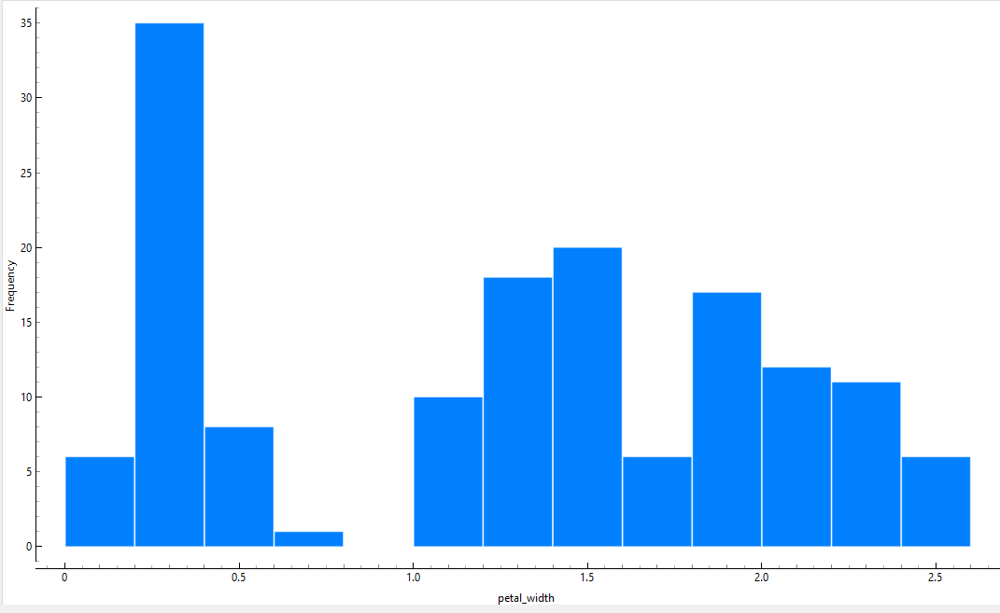
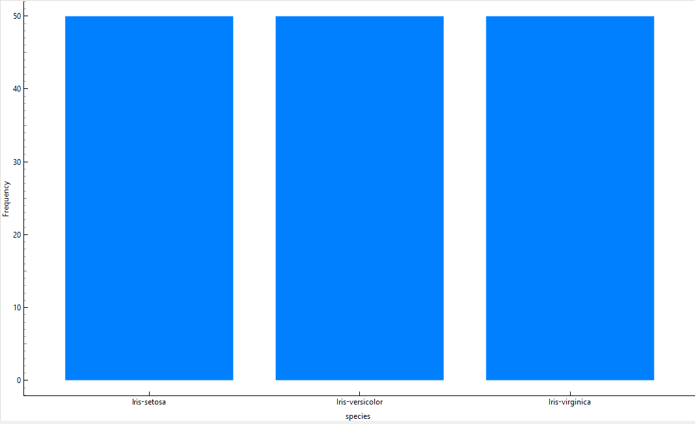
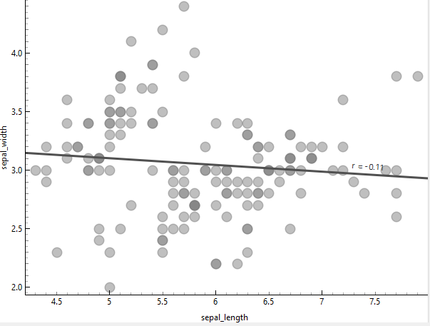
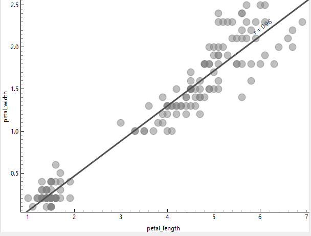
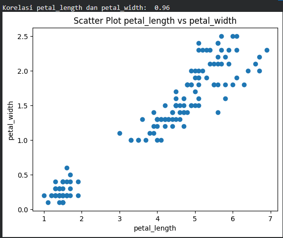
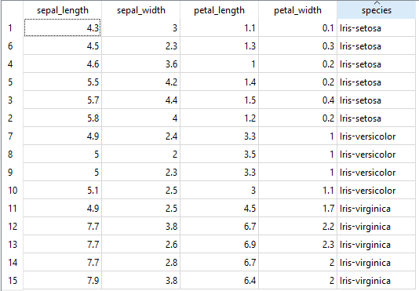
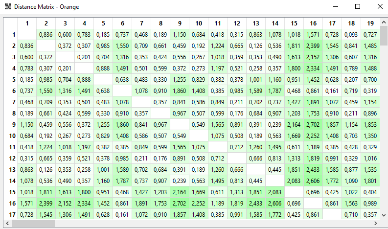

Data Understanding#
Apa itu Metodologi CRISP-DM?#
Dalam mengerjakan proyek penambangan data ini, kita mengikuti alur CRISP-DM (Cross-Industry Standard Process for Data Mining). Metodologi ini punya 6 tahapan utama, mulai dari memahami bisnis sampai modelnya siap dipakai. Tahap Data Understanding adalah fase kedua setelah Business Understanding. Kalau di fase pertama kita fokus ke “apa masalahnya?”, di fase kedua ini kita fokus ke “mana datanya?” dan “gimana kondisi datanya?”.
Tujuan Utama Fase Ini:#
Kenalan sama data: Biar kita gak asing sama isi tabelnya.
Cek Kualitas: Mastiin datanya bersih, gak ada yang kosong (missing values), atau gak ada yang aneh (outliers).
Cari Insight Awal: Nemu pola-pola menarik lewat statistik simpel.
Persiapan Akses Data#
Sebelum kita bisa memahami pola dan karakteristik data, kita perlu memastikan data bisa diakses dengan baik. Tahap ini termasuk bagian dari Data Understanding, karena kita sedang mengenali sumber data dan cara membacanya.
Install Library & Connect Python ke Database
Jalankan perintah berikut di terminal/command prompt untuk menginstal library yang dibutuhkan:
pip install pandas seaborn matplotlib numpy sqlalchemy pymysql
Kenapa perintahnya panjang? Karena kita mengunduh beberapa alat sekaligus:
SQLAlchemy: Mesin pengolah database.
PyMySQL: “Kabel” penghubung ke MySQL Laragon.
Pandas: Pembuat tabel agar data rapi.
Seaborn & Matplotlib: Alat visualisasi untuk grafik.
NumPy: Mesin hitung numerik yang dipakai Pandas dan Seaborn.
import pandas as pd
import seaborn as sns
import matplotlib.pyplot as plt
import numpy as np
from sqlalchemy import create_engine
# Koneksi ke MySQL Laragon
engine = create_engine("mysql+pymysql://root:@localhost/pendata")
df = pd.read_sql("SELECT * FROM iris", engine)
print("✅ Data Berhasil Diambil dari MySQL!")
Sampel Data
Berikut adalah gambaran 5 baris pertama (head) dari dataset Iris untuk menunjukkan format data awal:
index |
sepal_length |
sepal_width |
petal_length |
petal_width |
species |
|---|---|---|---|---|---|
0 |
5.1 |
3.5 |
1.4 |
0.2 |
Iris-setosa |
1 |
4.9 |
3.0 |
1.4 |
0.2 |
Iris-setosa |
2 |
4.7 |
3.2 |
1.3 |
0.2 |
Iris-setosa |
3 |
4.6 |
3.1 |
1.5 |
0.2 |
Iris-setosa |
4 |
5.0 |
3.6 |
1.4 |
0.2 |
Iris-setosa |
Struktur Dataset
Berdasarkan pemeriksaan awal terhadap Iris Flower Dataset, diperoleh informasi struktur sebagai berikut:
Jumlah Baris: Dataset ini memiliki total 150 baris (records).
Jumlah Kolom: Terdapat 5 kolom utama yang digunakan untuk proses analisis.
Sumber Data: Dataset diperoleh dari repositori publik Kaggle.
Deskripsi Atribut (Tipe Data)
Dataset ini terdiri dari 4 atribut numerik yang merepresentasikan ukuran bagian bunga dalam satuan centimeter (cm) dan 1 atribut kategorikal yang berfungsi sebagai label atau target klasifikasi bunga tersebut.
Kita pakai fungsi df.info() buat lihat tipe data tiap kolom dan mastiin nggak ada data yang bolong.
df.info()
Nama Atribut |
Tipe Data |
Deskripsi |
|---|---|---|
sepal_length |
Numerik (Float) |
Panjang kelopak bunga dalam cm. |
sepal_width |
Numerik (Float) |
Lebar kelopak bunga dalam cm. |
petal_length |
Numerik (Float) |
Panjang mahkota bunga dalam cm. |
petal_width |
Numerik (Float) |
Lebar mahkota bunga dalam cm. |
species |
Kategorikal (String) |
Label spesies bunga (Setosa, Versicolor, Virginica). |
Catatan: Atribut numerik akan digunakan sebagai variabel independen, sedangkan atribut
speciesakan menjadi variabel dependen.
Analisis Singkat:
Total Sampel: 150 data.
Kondisi: Data sangat sehat karena tidak ditemukan nilai kosong (Non-Null).
Atribut: Terdiri dari 4 fitur angka (panjang & lebar kelopak/mahkota) dan 1 kolom target (spesies).
Statistik Deskriptif
Kita hitung nilai rata-rata (\(\bar{x}\)) dan sebaran datanya (\(\sigma\)) untuk melihat ringkasan angka dari 150 sampel yang kita punya.
Kode Python:
# Menampilkan ringkasan statistik untuk semua fitur numerik
df.describe()
index |
sepal_length |
sepal_width |
petal_length |
petal_width |
|---|---|---|---|---|
count |
150.0 |
150.0 |
150.0 |
150.0 |
mean |
5.843333333333334 |
3.0540000000000003 |
3.758666666666666 |
1.1986666666666668 |
std |
0.8280661279778629 |
0.4335943113621737 |
1.7644204199522617 |
0.7631607417008414 |
min |
4.3 |
2.0 |
1.0 |
0.1 |
25% |
5.1 |
2.8 |
1.6 |
0.3 |
50% |
5.8 |
3.0 |
4.35 |
1.3 |
75% |
6.4 |
3.3 |
5.1 |
1.8 |
max |
7.9 |
4.4 |
6.9 |
2.5 |
Penjelasan Parameter:
Setelah menjalankan fungsi
df.describe(), kita akan mendapatkan beberapa parameter kunci yang menjelaskan karakteristik data Iris kita:
Count: Menunjukkan jumlah total baris data yang ada. Untuk dataset ini, jumlahnya adalah 150 sampel.
Mean: Nilai rata-rata dari seluruh data pada atribut tertentu.
Std: Standar deviasi, yang menunjukkan seberapa jauh data tersebar dari nilai rata-ratanya. Semakin besar nilainya, berarti data semakin bervariasi.
Min: Nilai terkecil yang ditemukan dalam kolom tersebut.
Max: Nilai terbesar yang ditemukan dalam kolom tersebut.
Verifikasi Kualitas Data (Null & Duplicate)#
Setelah kita cek angka-angkanya, sekarang kita pastikan data ini benar-benar bersih. Di dunia penambangan data, ada istilah “Garbage In, Garbage Out”; kalau datanya sampah, hasilnya pun bakal sampah.
Pemeriksaan Nilai Null (Missing Values)
Data kosong bisa bikin algoritma kita error atau salah hitung. Kita pakai fungsi isnull() untuk melihat apakah ada baris yang bolong.
Kode Python:
# Cek jumlah data kosong di setiap kolom
print("Jumlah Data Null:")
print(df.isnull().sum())
Pemeriksaan dilakukan untuk mengidentifikasi keberadaan nilai kosong (missing values) pada setiap variabel dalam dataset. Berdasarkan hasil pengecekan, seluruh kolom tidak memiliki nilai null.
Jumlah Data Null per Kolom
Nama Kolom |
Jumlah Null |
|---|---|
sepal_length |
0 |
sepal_width |
0 |
petal_length |
0 |
petal_width |
0 |
species |
0 |
dtype: int6 |
Analisis:
Jika hasilnya semua 0, berarti data Iris kamu sudah aman dan lengkap. Tidak perlu ada proses “tambal sulam” data (imputasi).
Pemeriksaan Data Duplikat
Data duplikat adalah baris yang memiliki seluruh nilai kolom identik satu sama lain. Keberadaan data duplikat dalam jumlah signifikan dapat memengaruhi hasil analisis, terutama pada pemodelan machine learning, karena dapat menyebabkan bias distribusi dan meningkatkan risiko overfitting.
# Cek jumlah data yang kembar
jml_duplikat = df.duplicated().sum()
print(f"Jumlah data duplikat: {jml_duplikat}")
# Kalau mau lihat data mana aja yang kembar:
if jml_duplikat > 0:
print(df[df.duplicated()])
Berdasarkan hasil pengecekan, ditemukan adanya data duplikat dalam dataset.
Jumlah Data Duplikat
Total data duplikat: 3 baris
Index |
sepal_length |
sepal_width |
petal_length |
petal_width |
species |
|---|---|---|---|---|---|
34 |
4.9 |
3.1 |
1.5 |
0.1 |
Iris-setosa |
37 |
4.9 |
3.1 |
1.5 |
0.1 |
Iris-setosa |
142 |
5.8 |
2.7 |
5.1 |
1.9 |
Iris-virginica |
Ditemukan tiga baris dengan nilai identik.
Visualisasi Data#
Histogram#
Apa itu Histogram?#
Histogram adalah grafik batang yang menggambarkan distribusi atau penyebaran frekuensi data. Alih alih melihat tumpukan angka dalam tabel, histogram mengubahnya menjadi bentuk visual agar kita bisa melihat pola data secara instan.
Kenapa Kita Melakukan Visualisasi Ini?
Tujuannya adalah untuk memahami karakteristik fisik (seperti panjang dan lebar kelopak bunga) secara cepat. Kita bisa langsung mengetahui:
Pola Utama: Nilai mana yang paling sering muncul (rata-rata).
Variasi: Seberapa luas rentang datanya.
Anomali: Apakah ada data yang letaknya sangat jauh dari kelompok utama.
Panduan Membaca Sumbu (X & Y)
Agar mudah dipahami, bayangkan sumbu ini sebagai koordinat dasar:
Sumbu X (Horizontal/Mendatar): Mewakili Nilai atau Ukuran. Misalnya, panjang kelopak dalam satuan cm (5cm, 6cm, dst).
Sumbu Y (Vertical/Tegak): Mewakili Frekuensi atau Jumlah. Menunjukkan berapa kali ukuran di sumbu X tersebut muncul dalam data kita.
Logika Singkat: Sumbu X adalah “Apa ukurannya?”, Sumbu Y adalah “Berapa banyak jumlahnya?”.

Fig. 1 Histogram Distribusi Frekuensi Fitur sepal_length
Fig. 2 Histogram Distribusi Frekuensi Fitur sepal_width
Fig. 3 Histogram Distribusi Frekuensi Fitur petal_length
Fig. 4 Histogram Distribusi Frekuensi Fitur petal_width
Fig. 5 Histogram Distribusi Frekuensi Fitur speciesScatter plot#
Apa itu Scatter Plot?#
Scatter plot (diagram titik) adalah grafik yang digunakan untuk melihat hubungan antara dua variabel angka. Jika histogram hanya melihat satu fitur, scatter plot mempertemukan dua fitur sekaligus untuk melihat apakah mereka saling memengaruhi.
Kenapa Kita Melakukan Visualisasi Ini?#
Tujuannya adalah untuk mencari Korelasi (pola hubungan). Dengan scatter plot, kita bisa menjawab pertanyaan seperti:
“Kalau kelopak bunganya makin panjang, apakah lebarnya otomatis makin besar juga?”
“Apakah ada kelompok data yang terpisah secara jelas?” (Ini sangat penting untuk teknik Clustering di mata kuliah Penambangan Data).
Memahami Sumbu X dan Y (Titik Pertemuan)#
Cara membacanya sangat sederhana, bayangkan seperti koordinat di peta:
Sumbu X (Horizontal): Variabel pertama (misal: Panjang Sepal).
Sumbu Y (Vertical): Variabel kedua (misal: Lebar Sepal).
Titik (Dot): Setiap satu titik di grafik mewakili satu sampel data yang merupakan pertemuan antara nilai X dan nilai Y.
Scatter Plot sepal_length dan sepal_width

Fig. 6 Scatter Plot Fitur sepal_length dan sepal widthKorelasi: Nilai \(r = -0.11\) menunjukkan korelasi negatif yang sangat lemah, hampir mendekati nol.
Insight: Artinya, panjang sepal tidak terlalu memengaruhi lebarnya. Titik-titik data terlihat menyebar (scattered) tanpa membentuk pola garis yang jelas. Untuk klasifikasi, fitur sepal ini biasanya lebih sulit membedakan antar spesies dibanding fitur petal.
Scatter Plot petal dan petal_width

Fig. 7 Scatter Plot Fitur petal_length dan petal_width berikut jika di implementasikan di pythonprint("Korelasi petal_length dan petal_width: ",round(df['petal_width'].corr(df['petal_length']), 2))
plt.scatter(df['petal_length'], df['petal_width'])
plt.xlabel('petal_length')
plt.ylabel('petal_width')
plt.title('Scatter Plot petal_length vs petal_width')
plt.show()

Korelasi: Nilai \(r = 0.96\) menunjukkan korelasi positif yang sangat kuat (mendekati sempurna). Insight: Ada hubungan linear yang sangat konsisten semakin panjang kelopak (petal), maka lebarnya hampir pasti bertambah secara proporsional.
Cluster: Kamu bisa melihat ada kelompok kecil di pojok kiri bawah yang terpisah jauh dari kelompok besar lainnya. Itu adalah spesies Setosa, yang secara fisik memang jauh lebih kecil dibanding Versicolor dan Virginica.
Outlier#
Apa itu Outlier?#
Outlier (Pencilan) adalah titik data yang nilainya sangat jauh berbeda dari mayoritas data lainnya dalam satu kelompok. Bayangkan jika kamu mendata tinggi badan mahasiswa di kelasmu yang rata-rata 160–170 cm, tiba-tiba ada satu orang yang tingginya 210 cm. Nah, orang tersebut adalah outlier.
Kenapa Kita Harus Mendeteksi Outlier?
Dalam pengolahan data, outlier bisa terjadi karena dua hal:
Kesalahan Input: Misalnya salah ketik angka (seharusnya 1.5 jadi 15).
Variasi Alami: Memang ada sampel yang unik/langka.
Penting untuk mendeteksi mereka karena outlier bisa “merusak” hasil statistik (seperti rata-rata) dan membuat model prediksi menjadi tidak akurat.
Metode: Local Outlier Factor (LOF)
Berdasarkan gambar laporan, saya menggunakan metode LOF.
Cara Kerjanya: LOF tidak hanya melihat nilai angka, tapi melihat kepadatan di sekitar sebuah titik. Jika sebuah titik berada di area yang sangat sepi (jauh dari tetangganya/neighbors), maka sistem akan menandainya sebagai outlier.
Sumbu X & Y pada Outlier : Dalam visualisasi yang kamu buat, sumbu X dan Y tetap mewakili fitur data, namun sistem menambahkan tanda khusus (biasanya warna atau bentuk berbeda) pada titik-titik yang dianggap “aneh” oleh algoritma LOF tersebut.

Fig. 8 Outlierberikut jika di implementasikan di python
X = df.select_dtypes(include=[np.number]).values
lof = LocalOutlierFactor(
n_neighbors=20,
contamination=0.10,
metric='euclidean'
)
y_pred = lof.fit_predict(X)
df['LOF_Score'] = -lof.negative_outlier_factor_
df['Outlier'] = y_pred
outlier_lines = list(df[df['Outlier'] == -1].index + 1)
print("Total Outlier:", len(outlier_lines))
print("Nomor Baris Outlier:")
print(outlier_lines)
Total Outlier: 15
Nomor Baris Outlier:
[14, 15, 16, 34, 42, 58, 61, 94, 99, 106, 107, 118, 119, 123, 132]
Mengukur jarak data (distance)#
Menghitung jarak data iris
#
Diatas tadi kita sudah explorasi data kita sudah tau bahwa data pada IRIS yang semua datanya Numerik, sehingga kita hanya akan menggunakan tipe jarak Euclidean, dan jarak kategorikal pada kolom spesies
Fitur / Kolom |
Baris 0 |
Baris 1 |
Tipe Data |
|---|---|---|---|
sepal_length |
5.1 |
4.9 |
Numerik |
sepal_width |
3.5 |
3.0 |
Numerik |
petal_length |
1.4 |
1.4 |
Numerik |
petal_width |
0.2 |
0.2 |
Numerik |
species |
setosa |
setosa |
Kategorikal |
Menghitung Jarak Numerik Pada IRIS#
Tujuan perhitungan ini adalah untuk mengukur kemiripan (similarity) dua sampel data dengan melihat selisih nilai pada tiap fitur numeriknya.
Fitur |
Row 0 |
Row 1 |
Selisih (\(A-B\)) |
Kuadrat \((A-B)^2\) |
|---|---|---|---|---|
sepal_length |
5.1 |
4.9 |
\(0.2\) |
\(0.04\) |
sepal_width |
3.5 |
3.0 |
\(0.5\) |
\(0.25\) |
petal_length |
1.4 |
1.4 |
\(0\) |
\(0\) |
petal_width |
0.2 |
0.2 |
\(0\) |
\(0\) |
Langkah Penyelesaian:
Total Kuadrat (\(\sum\)): Menjumlahkan seluruh kolom hasil kuadrat.
\(0.04 + 0.25 + 0 + 0 = \mathbf{0.29}\)
Jarak Akhir (\(\sqrt{}\)): Melakukan akar kuadrat dari total penjumlahan untuk mendapatkan jarak Euclidean.
\(d = \sqrt{0.29} \approx \mathbf{0.5385}\)
Interpretasi Singkat:
Nilai jarak 0.5385 yang mendekati angka 0 membuktikan secara matematis bahwa Row 0 dan Row 1 memiliki karakteristik fisik yang sangat identik. Dalam Penambangan Data, ini mengindikasikan bahwa kedua data tersebut kemungkinan besar berada dalam satu kelompok (cluster) yang sama.
Menghitung Jarak Kategorikal Pada IRIS#
Untuk atribut non-numerik seperti ‘Species’, kita menggunakan metode Simple Matching. Logikanya sederhana: jika data sama maka jaraknya 0 (identik), jika berbeda maka jaraknya 1 (maksimal).
Rumus yang digunakan adalah \(D_{cat} = \frac{P - M}{P}\), di mana \(P\) adalah total fitur kategorikal dan \(M\) adalah jumlah kecocokan (match).
Variabel Kategorikal |
Baris 0 (Sampel A) |
Baris 1 (Sampel B) |
Hasil Observasi |
|---|---|---|---|
species |
setosa |
setosa |
Match (Cocok) |
Kalkulasi Jarak:
Total Dimensi Kategorikal (\(P\)): 1
Jumlah Atribut yang Sama (\(M\)): 1
Skor Jarak Kategorikal (\(D_{cat}\)): \(\frac{1 - 1}{1} = \frac{0}{1} = \mathbf{0}\)
Kesimpulan: Karena skor \(D_{cat}\) adalah 0, ini mengonfirmasi bahwa secara kategoris tidak ada perbedaan antara Baris 0 dan Baris 1. Keduanya memiliki label yang sama persis, sehingga nilai “penalti” jaraknya adalah nol.
Akumulasi Jarak Akhir Pada IRIS#
Setelah mendapatkan nilai dari dua aspek berbeda (Numerik dan Kategorikal), kita menggabungkannya untuk mendapatkan skor jarak total. Dalam kasus ini, kita menggunakan penjumlahan sederhana:
Kalkulasi: $\(D_{total} = 0.5385 + 0 = \mathbf{0.5385}\)$
Analisis Tambahan: Cosine Similarity (Arah Kedekatan)#
Selain melihat jarak “garis lurus” (Euclidean), kita juga menggunakan Cosine Similarity untuk melihat kemiripan proporsi atau arah sudut antar fitur numerik. Jika Euclidean melihat seberapa “jauh” perbedaannya, Cosine melihat seberapa “searah” polanya.
Rumus Komputasi: $\(\cos(\theta) = \frac{\mathbf{A} \cdot \mathbf{B}}{\|\mathbf{A}\| \|\mathbf{B}\|}\)$
Proses Kalkulasi:
Dot Product (Atas): \((5.1 \times 4.9) + (3.5 \times 3.0) + (1.4 \times 1.4) + (0.2 \times 0.2) = \mathbf{37.49}\)
Magnitude (Bawah): \(\sqrt{5.1^2 + 3.5^2 + 1.4^2 + 0.2^2} \times \sqrt{4.9^2 + 3.0^2 + 1.4^2 + 0.2^2}\)
\(\mathbf{6.345 \times 5.918 \approx 37.550}\)
Hasil Akhir: \(\frac{37.49}{37.550} \approx \mathbf{0.9984}\)
Insight Akhir#
Jarak Total (0.5385): Mengonfirmasi bahwa secara fisik, kedua bunga ini berada pada posisi yang berdekatan di ruang data.
Cosine Similarity (0.9984): Angka yang sangat mendekati 1.0 ini menunjukkan bahwa pola pertumbuhan (proporsi) antara Baris 0 dan Baris 1 hampir identik secara arah sudut.
Kesimpulan Final: Kedua sampel data ini tidak hanya memiliki nilai yang mirip secara angka, tetapi juga memiliki “pola” fitur yang sangat searah.
Implementasi pada Orange Data Mining#
Dalam praktikum menggunakan Orange Data Mining, kita memanfaatkan widget Distances. Poin krusial dalam langkah ini adalah penggunaan metode Normalized Euclidean.
Mengapa Harus Normalisasi? Karena setiap fitur mungkin memiliki skala yang berbeda. Normalisasi memastikan bahwa fitur dengan angka besar (misal Sepal Length) tidak mendominasi fitur dengan angka kecil (misal Petal Width).
Output: Hasilnya diproyeksikan ke dalam Distance Matrix, yang memvisualisasikan skor jarak antar setiap sampel data secara head-to-head.

Berdasarkan hasil pemrosesan pada widget Distance Matrix:
Nilai mendekati 0 (Warna Gelap): Menunjukkan bahwa kedua bunga memiliki karakteristik fisik yang hampir identik.
Nilai tinggi (Warna Terang): Menunjukkan perbedaan morfologi yang signifikan antar bunga.
Menghitung jarak data student#
Berikut adalah data sampel untuk pengujian (Row 0 dan Row 1):
Fitur / Kolom |
Baris 0 |
Baris 1 |
Tipe Data (DM) |
|---|---|---|---|
Gender |
Male |
Female |
Nominal |
Age |
33.0 |
24.0 |
Numerik |
City |
Visakhapatnam |
Bangalore |
Nominal |
Academic Pressure |
5.0 |
2.0 |
Ordinal |
CGPA |
8.97 |
5.9 |
Numerik |
Study Satisfaction |
2.0 |
5.0 |
Ordinal |
Sleep Duration |
‘5-6 hours’ |
‘5-6 hours’ |
Ordinal |
Dietary Habits |
Healthy |
Moderate |
Ordinal |
Financial Stress |
1.0 |
2.0 |
Ordinal |
Depression |
1 |
0 |
Nominal (Target) |
Kenapa Harus Dipilah? Ini Alasannya:
Dalam Data Mining, kita tidak bisa asal menjumlahkan semua kolom karena “cara ngukurnya” beda-beda. Berikut alasan kenapa saya pilah:
1. Masalah Data Ordinal (Skala)
Seperti yang kamu bilang, data Ordinal (seperti Academic Pressure 1-5 atau Sleep Duration) itu spesial.
Dia punya tingkatan (1 lebih rendah dari 5), tapi dia bukan angka murni seperti CGPA.
Alasan: Sebelum dihitung pakai Euclidean, kita harus melakukan Mapping (misal: ‘Healthy’ jadi 3, ‘Moderate’ jadi 2, ‘Unhealthy’ jadi 1). Kalau belum di-mapping, komputer akan bingung membacanya sebagai angka atau teks.
2. Perbedaan Metrik Jarak
Numerik (Age, CGPA): Pakai Euclidean (dikurangi lalu dikuadratkan).
Nominal (Gender, City): Pakai Simple Matching (Sama atau Beda).
Jika kita paksa semua kolom masuk ke satu rumus tanpa dipilah, hasil jaraknya jadi tidak akurat (istilahnya Bias).
3. Kolom Target (Depression/Suicidal Thoughts)
Alasan: Kolom seperti Depression biasanya tidak dimasukkan dalam hitungan jarak kemiripan.
Kenapa? Karena ini adalah “jawaban” yang ingin kita prediksi. Kita menghitung jarak berdasarkan “ciri-cirinya” (tekanan, nilai, pola tidur), bukan berdasarkan “hasil akhirnya”.
Perbedaan Nominal dengan Ordinal
Nominal: Gak ada urutan.
Contoh: Warna motor (Merah, Hitam, Biru). Gak ada yang lebih “tinggi” derajatnya.
Ordinal: Ada urutan/tingkatan.
Contoh: Kepuasan belajar (Puas, Cukup, Tidak Puas). Di sini jelas kalau “Puas” itu levelnya di atas “Cukup”.
Karena dataset Student memiliki variasi tipe data yang berbeda, kita melakukan dekomposisi perhitungan berdasarkan sifat masing-masing fitur (Numerik, Nominal, dan Ordinal) untuk menjaga akurasi kemiripan.
Menghitung Jarak Numerik pada Student#
Fitur numerik kontinu diukur menggunakan selisih kuadrat untuk melihat jarak fisik antar observasi.
Fitur Numerik |
Sampel A (Row 0) |
Sampel B (Row 1) |
Selisih (\(A-B\)) |
Kuadrat \((A-B)^2\) |
|---|---|---|---|---|
Age |
33.0 |
24.0 |
\(9.0\) |
\(81.0\) |
CGPA |
8.97 |
5.9 |
\(3.07\) |
\(9.4249\) |
Total Varians Numerik (\(\sum\)): \(81.0 + 9.4249 = \mathbf{90.4249}\)
Jarak Numerik (\(D_{num}\)): \(\sqrt{90.4249} \approx \mathbf{9.51}\)
Menghitung Nominal Pada Student (Simple Matching)#
Untuk fitur label (Nominal), kita menggunakan rasio ketidakcocokan. Jarak akan bernilai 0 jika identik dan 1 jika berbeda.
Fitur Nominal |
Sampel A |
Sampel B |
Status |
|---|---|---|---|
Gender |
Male |
Female |
Mismatch |
City |
Visakhapatnam |
Bangalore |
Mismatch |
Profession |
Student |
Student |
Match |
Total Atribut (\(P\)): 3
Jumlah Cocok (\(M\)): 1
Jarak Nominal (\(D_{nom}\)): \(\frac{P - M}{P} = \frac{3 - 1}{3} = \frac{2}{3} \approx \mathbf{0.67}\)
Normalisasi & Menghitung Jarak Ordinal#
Fitur ordinal memiliki tingkatan nilai. Kita melakukan mapping ke skala numerik (misal: Healthy=3, Moderate=2, Unhealthy=1) sebelum dilakukan perhitungan.
Fitur Ordinal |
Sampel A (Val) |
Sampel B (Val) |
Selisih |
Kuadrat |
|---|---|---|---|---|
Academic Pressure |
5 |
2 |
\(3\) |
\(9\) |
Study Satisfaction |
2 |
5 |
\(-3\) |
\(9\) |
Dietary Habits |
3 (Healthy) |
2 (Mod) |
\(1\) |
\(1\) |
Total Varians Ordinal: \(9 + 9 + 1 = \mathbf{19}\)
Jarak Ordinal (\(D_{ord}\)): \(\sqrt{19} \approx \mathbf{4.36}\)
Akumulasi Jarak Akhir Pada Student#
Hasil akhir diperoleh dengan menggabungkan ketiga dimensi jarak tersebut:
Analisis & Interpretasi Akhir#
Berdasarkan hasil komputasi sebesar 14.54, dapat disimpulkan bahwa Mahasiswa pada Baris 0 dan Baris 1 memiliki tingkat perbedaan yang signifikan.
Dominasi Usia: Perbedaan usia (9 tahun) memberikan kontribusi terbesar (\(81.0\) pada varians) terhadap jarak total.
Kesenjangan Performa: Terdapat perbedaan drastis pada beban akademik (Academic Pressure) dan kepuasan belajar (Study Satisfaction) yang saling bertolak belakang.
Kesesuaian Profesi: Meskipun memiliki latar belakang sosial dan fisik yang berbeda, keduanya tetap memiliki kemiripan nominal pada fitur Profession (keduanya adalah mahasiswa).